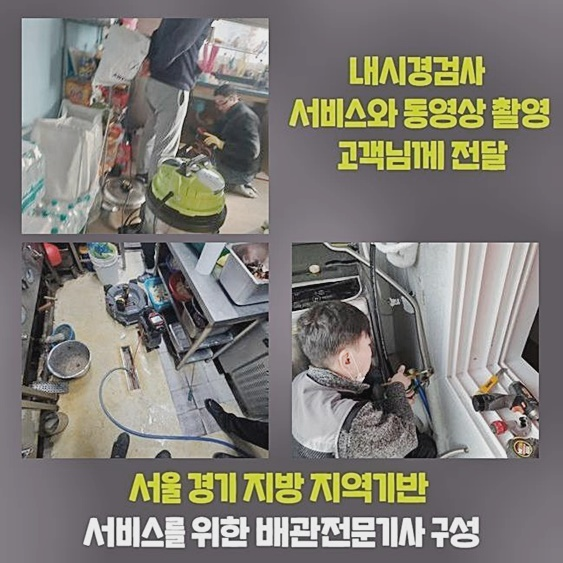
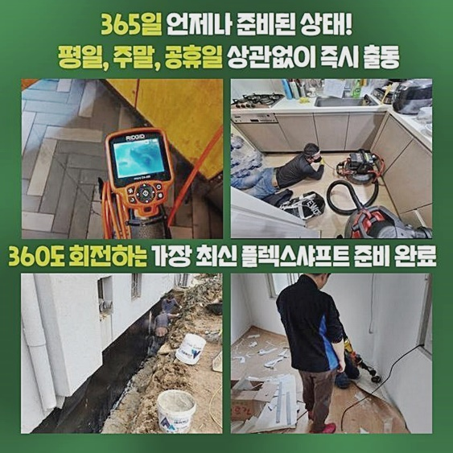
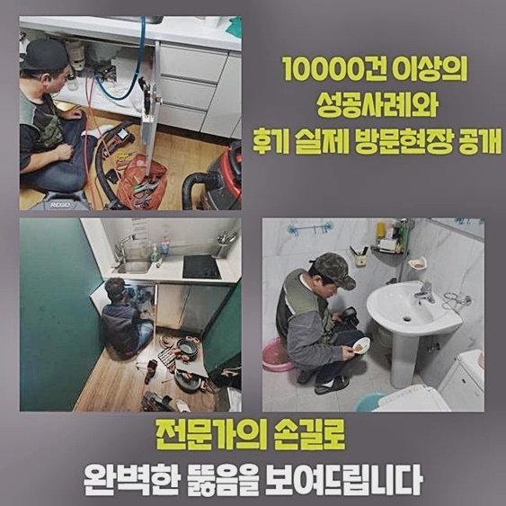
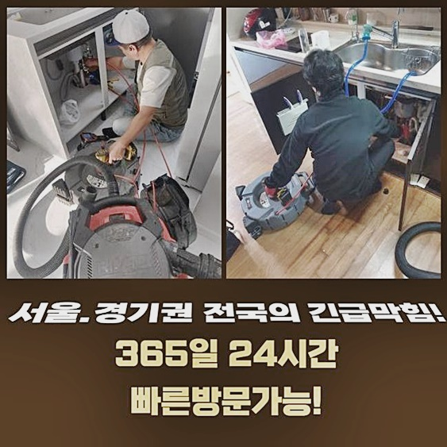
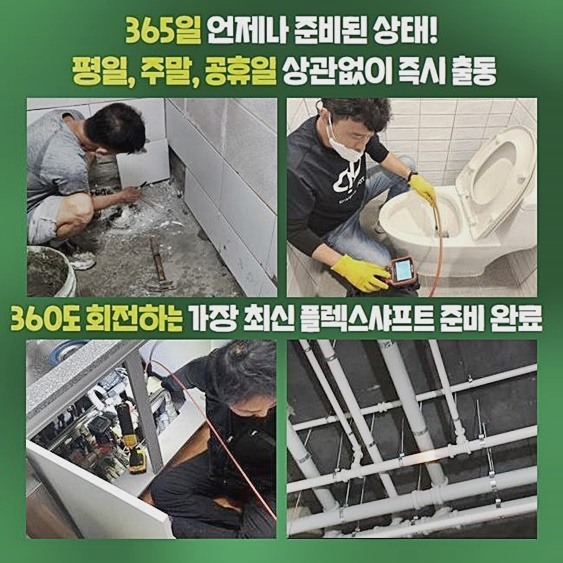
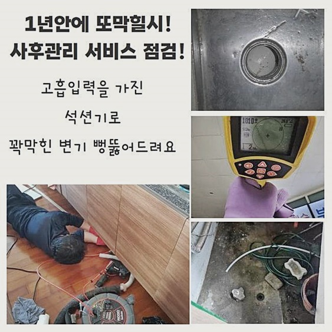

🏠 계양구 서운동변기막힘 목상동 맨홀역류 수리업체
용인시 처인구 배관막힘 전문 시공 후기

📋 작업 개요
- 위치: 용인시 처인구, 수원시 영통구, 화성시 동탄
- 서비스 유형: 배관막힘, 하수구청소, 고압세척
- 작업 일시:
- 업체명: 하수구수사대 (010-5615-2118)
🔍 문제 상황
계양구 서운동변기막힘 목상동 맨홀역류 수리업체
물을 운반하는 수로는 오랫동안 기능을 수행하다보면 조금씩 약화되면서 여러가지 곤란함을 불러일으키게 되는데요
이처럼 시설이 오래될수록 물 속의 오염원이 자리하여 물길을 차단해 버리고 수준이 점점 더 심하게 이물들이 쌓여버려서 결국에는 막힘문제가 생산되는 것입니다!
오염원의 종류를 보자면 기름 슬러지와 모발 비닐 쓰레기 등이 있는데 엎친 데 덮친 격으로 더해지면 자기들끼리 들러붙기 때문에 파이프의 본래 향로를 답답하게 폐쇄되도록 만듭니다!
나이가 든 배관이라면 일정 기점마다 수행하는 전문케어가 필요한데 막혀서 곤란해지는 문제들을 미리 방어하는 것이 열쇠입니다
문제의 초반부부터 오류를 발견하고 얼른 뚫어주는 것이 더 악화되는 것을 차단하는 주요한 본분을 다합니다
실내에 끼치는 악영향이 조금이라도 축소될 수 있게 정기적으로 컨디션을 진단을 해야하는 경우라면 그에 걸맞는 솔루션을 취하는 것이 중요한 사안입니다
상황을 전화로 전해들으니 건물 내부의 상당한 수의 호수에 불편감을 줄 정도로 사태가 들불 번지듯 번지는 중이라 빠르게 막아서는 조침이 필요했어요
예전에도 타업체가 점검을 해줬음에도 원인을 발견해 내지 못했다는 점을 전달받고 나니 아무래도 이번 케이스는 심혈을 기울여야 할 것임을 마음을 먹게 됐네요
능숙한 전문가기 때문에 철저한 작업으로 문제를 극복시켜 드리기 위해 힘썼어요
각각 여러 기능을 보유하고 있는 도구들을 안전히 운반하여 긴급하게 해결을 봐야할 장소로 자리를 옮기게 됐습니다

🔎 원인 분석
💡 전문가 진단: 정밀 진단 장비를 사용하여 슬러지의 고착 여부를 판명하고 타격/세척 작업을 실시했습니다.
전화주신분이 간절한 얼굴을 하고 계셨기에 막힘이 한치도 나아지지 않았음을 감지할 수 있었는데요
본격적인 청소 작업에 착수하기에 앞서 어떤 순서로 작업이 착착 이어질 것인지 안내해 드리면서 기다려 달라고 요청드렸죠
꽉 막힌 배관을 개선하기 위해 노폐물을 조금씩 덜어내면서 조금씩 수로가 확보되는 과정을 통과하게 됩니다
마치 새로 갈아준 것처럼 티끌하나 없는 외관에 사용했던 생활용수가 시원스럽게 배수되는 모습을 보는 걸 도착지로 결정하여 우직하게 업무에 임하고 있어요!
내부에 있는 다수의 찌꺼기를 차분하게 청소하는 과정에서 틈도 없이 굳어버린 침전물들이 누적되어 있어서 쉽게 제거되지 않는 측면도 없지 않았는데요
저희의 많은 업력이 쌓인 기술자들은 첨단 고성능의 장치를 동원해서 정확도 높은 해석을 도출하고 나서 해당 문제점을 치료해 줍니다
제대로 된 원인을 알아내려면 설비에 대한 소양과 지식들이 두둑이 갖춰져야 합니다
만일 다른 원인을 찾는다면 또다른 막힘 사건이 찾아오고 호쾌하게 내려가는 모습을 확보하기는 힘듭니다
모든 장소에서 배관의 종류와 상황의 나쁜 정도가 다르며 내부에 침적한 이물질이 접착된 장소에 따라서 아예 기계가 달라질 수 있어요
이전에 왔었던 업체는 변기통 내부만 조사하고 더 밑의 오수관까지는 점검을 들어가지 않았다며 말씀을 전해주셨어요
헛물만 켜고 돌아가 버려서 더 허망하셨을 고객님을 위해서라도 얼른 낫게 해 드리고자 고압청소를 했습니다
경로에 말라붙어 있는 여러 노폐물을 단번에 씻어내려고 고압수 세척을 시작했는데 묵직한 물티슈 뭉치가 주된 동기가 된 듯 했어요

🔧 작업 과정
하나하나 덜어내는 번거로움이 있어서 시간은 꽤나 걸렸지만 하나의 이물질도 남지 않게 실시간 현황을 보며 작업했네요
물티슈는 수용성으로 분해되지 않으니 변기를 쓸 때는 주의하며 물티슈를 쓰셔야 하는 사용 팁도 전수드렸습니다!
모든 세대원들이 욕실을 가지 못하는 난감함을 두루 겪고 계셨기에 얼른 관로를 개방시키는 게 무엇보다 중요했죠!
주변부를 관찰해 봤더니 하수관이 불통하는 바람에 타일 위로 올라오는 역행까지 나타난 오염이 가득한 상황이었죠
배관 속에 많이 더럽지않다면 쉽게 달성될 수 있겠지만 침전물들이 딱딱하게 굳어버린다면 다른 추가적인 사안들을 줄지어 생기게 만드니 속도를 높여 처리해야 합니다
상황을 가볍게 점검하는 것만으로도 이슈가 생긴 쪽이 감지되지만 보다 구체화를 시키기 위해서 오수관로의 상황을 탐색해 봤네요
하수구 덮개를 개방시키자 바로 악취가 풍겨나왔고 가득 뭉쳐버린 오염물로 인해 하수관이 꽉 들어차 있어서 물이 흐르지 못하고 고여있었어요
썩은 듯한 냄새는 시설의 이용자분들에게 역한 느낌을 주고 기존 가구나 벽지에도 침투할 수 있어요
하수구 안이 막혀버리는 부분들로 인해서 악취나 오염물이 투출되면 세균으로 인한 감염까지도 촉발될지도 모르는 위험천만한 상황이 됩니다
특히 욕실의 경우에는 신체 곳곳이 접촉되는 활동들이 많이 일어나니 충분한 클리닝을 해야하는 곳이라고 말씀드릴 수 있어요
물이 유독 느릿하게 배출되거나 고이는 모습이 발현된다면 빠르게 하수구를 잘 다루는 사람에게 의뢰를 맡기셔야 합니다
엄청난 구옥인데다 여러 세대가 뭉친 건물에 거주하시면 빠른 주기로 하수관의 불능 상태가 만들어질 수 있어요
하수구의 이상증세가 발생하고 빨리 개선방향을 잡을 수 있지만 미리 전문가에게 탐지와 클리닝을 받는 것이 예방하는 것이 베스트입니다
금전적인 절약도 가능한데다 많은 세대까지 곤란함을 겪을 이유는 없으니까요
물길을 셀프로 내기 위해서 용을 쓰는 것은 이미 약화된 배수로를 보다 더 찔러서 상처를 내는 격입니다
리노베이션되지 않은 배관로라면 약간의 마찰만 가해져도 파동으로 인해 데미지를 입을 여지가 충분하기 때문입니다!
따라서 전문적인 업체에 의뢰하여 속성을 조사한 뒤에 부합하는 대응을 하는 편이 성공 확률이 높습니다
전용 카메라를 주입한다면 배관의 저 아래까지도 체크할 수 있으며 이물질의 종류라거나 크기를 정확도 높게 판단내릴 수 있게 됩니다
생활용수가 이동하게 되는 라인을 따라가면서 하수도를 스캔해보니 이물질이 뱀처럼 긴 모양으로 벽체에 달라붙어 있었어요


✅ 작업 완료
이처럼 긴 영역이 오염된 경우라 보인다면 고압세척 장치를 선정하여 파이프라인 전반을 씻어내리는 게 효과적입니다
오염원을 하나하나 갉아내는 대신 센 물살을 발사하여 하수관을 맑게 유지할 수 있습니다
실시간으로 내부 컨디션을 뚫어져라 확인하며 고압세척의 정도나 미묘한 균형 조율을 전문가로서 손봐줘야 합니다
집에서 흔히 구하는 뚫어뻥을 쓰는 것은 수박 겉핥기 식의 대응일 뿐이지 근본적인 개선책은 아닙니다
어디가 문제인지 디테일한 상담을 시행해야만 만족도가 높은 변화를 맞이할 수 있다는 것을 새겨 두시고 하수구 고장 문제가 수면 위로 드러난다면 지체 없이 서비스를 요청주시기를 바랍니다



⚠️ 하수구 배관 막힘 예방 및 관리 가이드
- ✅ 머리카락, 비닐, 물티슈 등 물에 분해되지 않는 이물질은 절대 흘려보내지 마세요.
- ✅ 기름기 많은 식기는 설거지 전 키친타올로 먼저 기름때를 닦아내세요.
- ✅ 주기적으로 배수구에 뜨거운 물을 가득 부어주어 유지방 고착을 방지하세요.
- ✅ 작업 후 1년 이내 재발 시 무상 A/S 보증 서비스를 제공합니다.
💡 핵심 정리
- 확실한 장비 작업(내시경 점검 및 샤프트 스케일링)으로 원인을 뿌리 뽑습니다.
- 작업 후 1년 이내에 동일한 부위 재발 시 100% 무상 A/S 서비스를 보장합니다.
- 서울 · 경기 · 인천 전 지역에 24시간 언제든 긴급 출동할 수 있도록 항시 대기 중입니다.
❓ 자주 묻는 질문 (FAQ)
🚨 용인시 처인구 배관막힘 문제로 고민이신가요?
정확한 원인 진단과 확실한 시공으로 재발 없는 해결을 약속드립니다.
24시간 긴급 출동 | 서울 · 경기 · 인천 전지역 | 1년 내 재발 시 무상 A/S